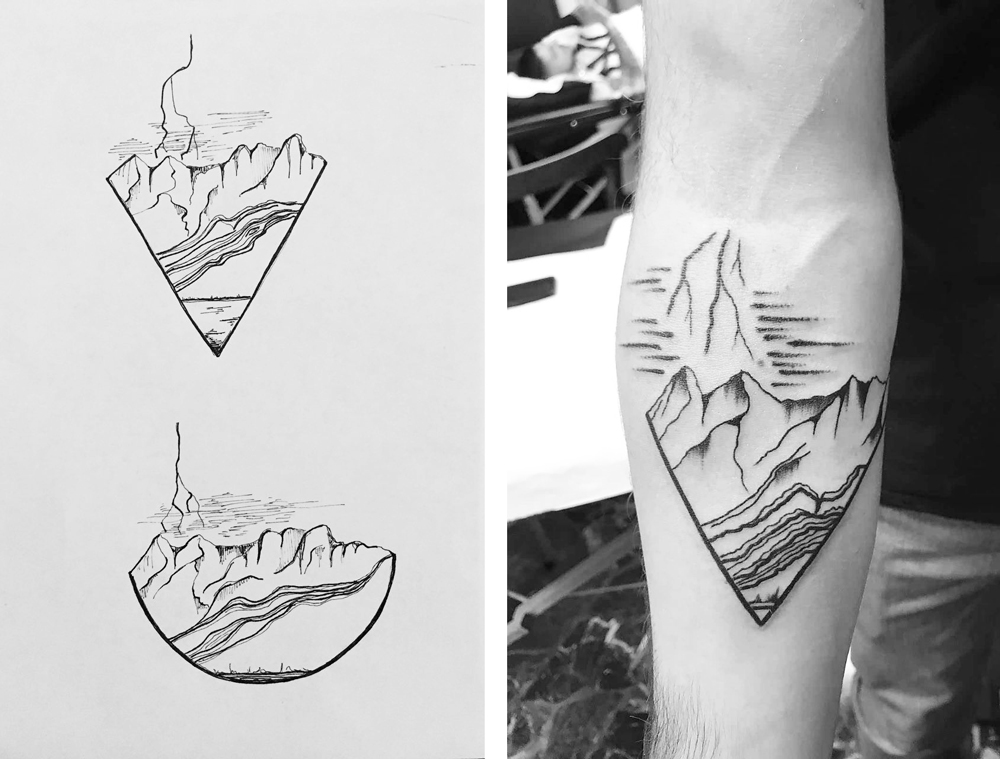
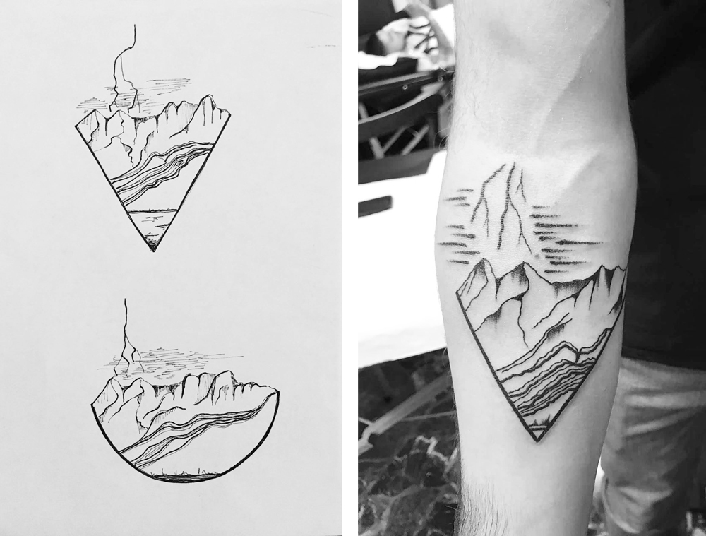

One day projects
One day graphic design projects and its execution.
Pantha rei
Exploring the concept of pantha rei (everything flows) and ephemerality. Photoshoot throughout a day, every 30min and 10min towards the last shots.
Ceramics in space
Collage for the entry page of a ceramist website. Merge of all of her main pieces together.
Diving in the sink
Renovated kitchen with home made cabinets. The clients' new countertop reminded me of a big swimming pool. The concept was therefore of summer and colors, waiting to dive into the pool. Work in progress.
Mary
Design for a non-profic calendar, whose story was about Mary, a girl from Nigeria, blackmailed to become a prostitute in Italy. Her journey across the globe speaks for all the immigrants that every day, run from death wishing for a future across the Mediterranean sea.
The leftover wall
The client is a ceramic artist. Her constant experimentations create a sur-plus of material. An old grey concrete wall in her garden was waiting to be renovated and I proposed to cover it with left over ceramic pieces that were waiting to be trashed. The project saw three phases: to break all the ceramics in smaller pieces, to attach the pieces with a tile glue, to inglobe them with mortar and finally to clean the excess mortar from the pieces. The irregularity of height made the process long and meticulous. Concept and execution by the author.

Cosmopolitan Roma Suites
Designed in 1950 by Montuori Vitellozzi, Termini is an iconic example of Italian rationalism with clear and functional forms, merging with more classical forms. The client wanted to establish a link between these curves and its guesthouse, recalling the 1930s, when the original project started.The geometry was simplified to its pure form. The addition of color for its iconic curve adds a dynamic element to the composition. The font was study to resemble 1930s signs.
 

Riders on the storm
Driving through the Death Valley during a lighting storm. The client wanted to keep this increadible event forever. Photograph and design by the author, execution by Filippo Garbaccio, Tiga Tattoo Design.